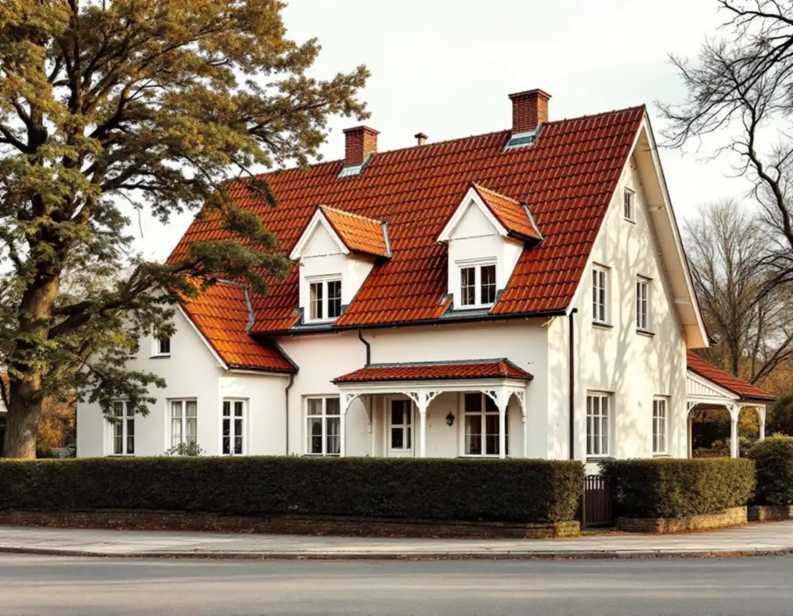
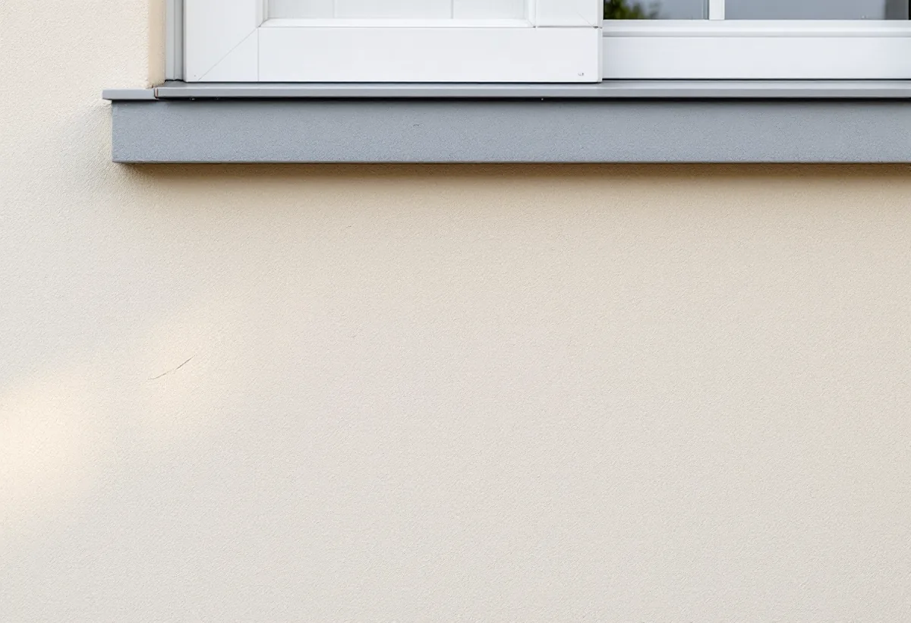

Solnakartan
Vi kontrollerar detaljplan, klassning och om fastigheten ligger i en utpekad miljö.
Råsunda är mest känt för sina flerfamiljshus längs Råsundavägen, men i norr mot Råstasjön finns ett villaområde som Solna stad pekar ut som en sammanhängande kulturhistoriskt värdefull miljö. Där gäller anpassningskrav för både färg och material. Geal Entreprenad AB renoverar fasader på villor och radhus i Råsunda, Bergshamra, Ulriksdal och övriga Solna, med gratis platsbesök och skriftligt kostnadsförslag.

Stadens tilläggsplan för vindsinredning i Råsunda beskriver ett äldre bostadsområde där många hus uppfördes i början av 1900-talet. Bebyggelsen är blandad eftersom utbyggnaden skedde successivt: flerfamiljshus i fem våningar längs Råsundavägen, lägre hus längre bort och villaområden i norr mot Råstasjön och söderut mot Ekensbergsvägen. Råsunda var i stort sett färdigbyggt på 1950-talet.
Villabebyggelsen i norra Råsunda är i översiktsplanen utpekad som en sammanhängande kulturhistoriskt värdefull miljö som i huvudsak ska bevaras till sin karaktär. Den finns också med i kulturminnesvårdsprogrammet, där Råsunda villastad har ambitionsnivå C. Enligt stadens planbeskrivning för fastigheten Fjället 8 innebär det en miljö som kan sakna homogen karaktär men ändå har kulturhistoriskt eller miljömässigt värde, och anpassningskraven gäller läge, färg, form och material.
För en fasadrenovering betyder det att materialvalet inte är fritt, även när huset saknar skyddsbestämmelse i detaljplanen. Vi utgår från det material huset har i dag och från husen runt omkring, och tar reda på vad som är original innan något byts.

Planbeskrivningen för Fjället 8, som vann laga kraft i februari 2024, ger en bild av en typisk villa i området. Huset uppfördes 1927–1928 och har drag från jugend och 1910-talets villaarkitektur, men också nationalromantiska drag från Danmark och Nordtyskland: ett högt valmat tak med två symmetriskt placerade kupor och småspröjsade fönster. Huvudbyggnaden bedöms ha stort kulturhistoriskt värde och är grönklassad.
Planen gällde ett nytt garage. Det antikvariska utlåtandet lyfte fram att garaget ansluter till villan genom putsade fasader och ett valmat tak med lertegel, och placeringen valdes så att huvudbyggnadens fasader kan upplevas i sin helhet från gatorna. Samma tanke gäller vid en renovering: det är villans fasad mot gatan som bär miljön.
Boverket påpekar att en ändring av färgtyp, till exempel från linoljefärg till plastfärg, kan påverka byggnadens yttre karaktärsdrag, medan ommålning i samma kulör normalt räknas som underhåll. På en putsad villa från 1920-talet lagar vi därför sprickor med ett bruk som passar den befintliga putsen och väljer en avfärgning som fungerar på underlaget. Om kulörerna finns mer under målare i Solna.
Boverket konstaterar att putsbortfall i de allra flesta fall beror på fukt. Kalkputs kan ta upp och avge fukt utan att stommen skadas, men blir belastningen för stor uppstår skador, och fuktig puts kan frysa sönder om fukten sitter kvar över vintern. Myndigheten pekar också på att tjockare isolering gör väggens yttre delar kallare, vilket kan hindra en putsad fasad från att torka ut.
De svaga punkterna är anslutningarna mot fönster och dörrar, stuprörens infästningar och skarvarna. Där behövs tvåstegstätning, så att vatten som kommer förbi det yttre skiktet kan ledas ut igen. Boverket noterar att en enstegstätning med mjukfog kan ha relativt kort livslängd även när den är väl utförd, och att det vid fönster ofta saknas vattenavledning mellan karm och omfattning.
Vid besöket knackar vi på putsen för att hitta partier som har släppt, tittar på fönsterblecken och sockeln och följer stuprören ner till marken. Ska takfoten och taket ses över samtidigt finns mer under takrenovering i Solna.
Solna stad skriver att bygglov krävs om fasadändringen gäller en särskilt värdefull byggnad eller ett särskilt värdefullt område, eller om detaljplanen säger att åtgärden kräver lov. Som fasadändring räknar staden bland annat byte av fasadfärg, fasadmaterial eller taktäckning. I Solnakartan ser du gällande detaljplan och vilka byggnader och områden som är kulturhistoriskt värdefulla.
Till en ansökan behövs normalt situationsplan, fasadritning, planritning och en material- och kulörbeskrivning, och ibland foton där grannhusen syns eller en antikvarisk förundersökning. Omfattar arbetet även tilläggsisolering eller nya fönster kräver staden dessutom en kontrollansvarig. Handläggningstiden är högst tio veckor från komplett ansökan, och grannar har sedan fyra veckor på sig att överklaga. Mer om puts och panel finns på sidan om fasadrenovering.
Vi kontrollerar detaljplan, klassning och om fastigheten ligger i en utpekad miljö.
Putsen knackas av, och fönsteranslutningar, sockel och stuprör gås igenom.
Lagning, omputsning och avfärgning redovisas var för sig med bruk och färg angivna.
Behövs bygglov tar vi fram material- och kulörbeskrivning till ansökan.
Puts och avfärgning görs i lämpligt väder, och anslutningarna tätas i två steg.
Vi går runt huset tillsammans och visar vad som har lagats.
På ett småhus ger det rotavdrag att reparera och mura fasader, måla fasader och tilläggsisolera, liksom att sätta upp ställningar som behövs för arbetet. I en bostadsrätt räknas fasaden som gemensam yta, och då ger arbetet inget avdrag.
Avdraget är 30 procent av arbetskostnaden, högst 50 000 kr per person och år och högst 75 000 kr tillsammans med rutavdrag. Geal drar avdraget direkt på fakturan.
Hur stor del av putsen som har släppt, om hela fasaden behöver putsas om, vilken avfärgning som passar underlaget, hur många fönsteranslutningar som ska göras om och om ett bygglov behöver förberedas. Tomtens terräng påverkar också hur ställningen ställs upp. Du får ett skriftligt kostnadsförslag efter ett gratis platsbesök.
Puts, panel och tilläggsisolering.
Fasadrenovering i Stockholm →Takbyte, takbesiktning och plåtarbeten.
Takläggare i Solna →Råsunda, Stocksundstorp och Råsta.
Takrenovering i Solna →Ritningar, kontrollplan och slutbesked.
Byggföretag i Solna →Bostadsrätt, stambyte och villor.
Badrumsrenovering i Solna →Fönster från 1950-talet, kitt och fogar.
Fönsterrenovering i Solna →Bostadsrätter i Råsunda, Hagalund och Huvudsta.
Golvläggare i Solna →Ta fram och slipa trägolvet under mattan.
Golvslipning i Solna →Bostadsrätter, fläktar och Råsundas villor.
Köksrenovering i Solna →Villor, radhus och lägenheter i Solna.
Målare i Solna →Plåt i Solnas kulturmiljöer.
Plåtslagare i Solna →Väggar, dörrar, balkong och radhus.
Snickare i Solna →Tapet efter husets ålder och underlag.
Tapetsering i Solna →